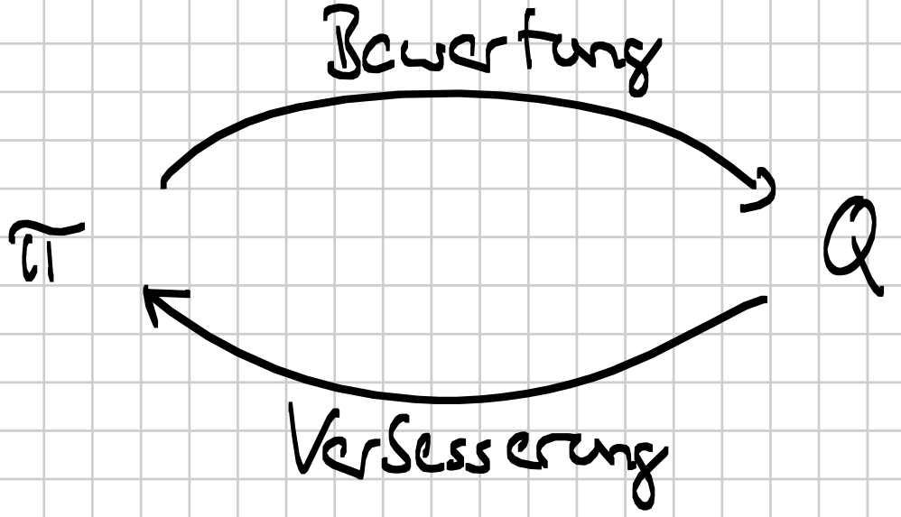
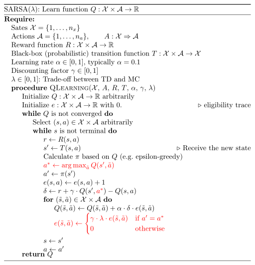
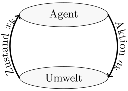
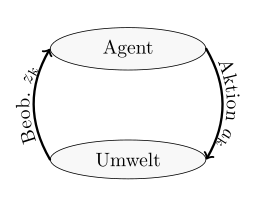
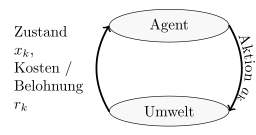

Dieser Artikel beschäftigt sich mit der Vorlesung „Probabilistische Planung“ am KIT. Er dient als Prüfungsvorbereitung. Ich habe die Vorlesungen bei Herrn Dr.-Ing. Marco Huber im Sommersemester 2015 und 2016 gehört. Die Inhalte sind dementsprechend stark an der Vorlesung angelehnt bzw. komplette Teile sind daraus übernommen. Der Artikel dient als Prüfungsvorbereitung und ist noch am Entstehen.
In der Vorlesung 'Probabilistische Planung' führt in das Thema Reinforcement Learning ein. Dabei werden drei Themenfelder besprochen:
- Markov'sche Entscheidungsprobleme (MDPs)
- Planung bei Messunsicherheiten (POMDPs)
- Reinforcement Learning (RL)
An Algorithmen sind insbesondere der Label-Korrektur-Algorithmus, das Dynamische Programmieren, der Kalman-Filter sowie die value- und policy iteration zu nennen.
Behandelter Stoff
Übersicht
| # | Datum | Kapitel | Inhalt |
|---|---|---|---|
| 1 | 26.04.2016 | Grundlagen | Wahrscheinlichkeitsraum, Grundraum, Ereignisraum, Resultate, Elementarereignis, $\sigma$-Algebra, Wahrscheinlichkeitsmaß, Bedingte Wahrscheinlichkeit, Ziegenproblem, Dichtefunktion |
| 2 | 28.04.2016 | Grundlagen | Allais-Paradoxon, Nutzentheorie, Präferenzrelation, Nutzenfunktion |
| 3 | 06.05.2016 | Grundlagen | Einführung in die Optimierungstheorie: Notwendige und Hinreichende Bedingungen, Konvexe Optimierung, Numerische Methoden (z.B. iterativer Abstieg) |
| 4 | 11.05.2016 | MDPs | Definition eines MDP, Plan vs. Strategie, Optimalitätsprinzip, DP |
| 5 | 18.05.2016 | MDPs | Endliche Planungsprobleme, Value- und Policy Iteration |
| 6 | 25.05.2016 | MDPs | Kürzeste-Wege Suche (Tiefensuche, Breitensuche, Dijkstra, A*, Branch & Bound; Label-Korrektur-Algorithmus); Trellis-Diagramm; Differentialantrieb; Pontryagin's Minimumprinzip |
| 7 | 01.06.2016 | MDPs (Folien) | Pontryagin's Minimumprinzip, Hamilton-Funktion, Riccati-Gleichung; LQR; Sicherheitsäquivalenz Aufgabe 11, Aufgabe 12, Aufgabe 13 |
| 8 | 08.06.2016 | POMDPs | Motivation und Definition von POMDP; Hinreichende Statistik; Bayes-Schätzer Aufgabe 14 |
| 9 | 15.06.2016 | POMDPs | Lineare Planungsprobleme (Kalman-Filter); Sperationsproblem; LQR, Endliche Planungsprobleme |
| 10 | 22.06.2016 | POMDPs | Endliche Planungsprobleme (Optimale Strategie, $\alpha$-Vektoren); Approximative Planung: OL, OLF, Modellprädiktive Planung Aufgabe 16 |
| 11 | 29.06.2016 | POMDPs | EKF, Parametrische / Nichtparametrische approximative Planung (Sicherheitsäquivalenz bei deterministischen Problemen); Funktionsapproximatoren für Wertefunktion / Strategie; Sensoreinsatzplanung Aufgabe 18 |
| 12 | 06.07.2016 | POMDPs, RL | Lineare Probleme; POMDPs: Sensoreinsatzplanung Aufgabe 19 |
| 13 | 13.07.2016 | RL | Monte Carlo Verfahren (Strategiebewertung), Exploration vs Exploitation, Explorations-Strategien; policy iteration; Temporal Difference Verfahren (Einschritt TD, Mehrschritt TD) Aufgabe 20 |
| 14 | 20.07.2016 | RL | Eligibility Traces (TD-Verfahren); Funktionsapproximatoren; Modellernende Verfahren (Dyna-Q, Adaptive DP, PILCO) |
Folien:
- 25.05.2016: Folie 4 - Die Knoten sind Zustände und die Kanten sind Aktionen
- \(g_{ij}^k = \infty\): Kein Übergang von \(i\) nach \(j\) in Schritt \(k\).
Grundlagen
Slides: ProPlan-1-Anschrieb.pdf
- $\sigma$-Algebra
- Sei $S$ eine Menge und $\mathcal{A}$ ein Menge aus Teilmengen von $S$.
$\mathcal{A}$ heißt eine $\sigma$-Algebra über $S$, genau dann, wenn
gilt:
- $S \in \mathcal{A}$
- $\forall M \in \mathcal{A} \Rightarrow (S \setminus M) \in \mathcal{A}$
- $M_1, M_2, \dots \in \mathcal{A} \Rightarrow \bigcup_{n \in \mathbb{N}} M_n \in \mathcal{A}$
- Wahrscheinlichkeitsmaß
- Eine Funktion $P: \mathcal{A} \rightarrow \mathbb{R}$ (mit $\mathcal{A}$ ist
Sigma-Algebra über der Grundmenge $S$) heißt
Wahrscheinlichkeitsmaß, wenn die Kolmogorov'schen Axiome gelten:
- Nicht-negativität: $\forall M \in \mathcal{A}: P(M) \geq 0$
- Normiertheit: $\forall P(S) = 1$
- $M_1, M_2 \in \mathcal{A} \land M_1 \cap M_2 = \emptyset \Rightarrow P(M_1 \cup M_2) = P(M_1) + P(M_2)$
- Normalverteilung
- Die Normalverteilung $\mathcal{N}(\mu, \sigma^2)$ ist eine kontinuierliche Verteilung mit der Dichtefunktion $$f(x) = \frac{1}{\sqrt{2 \pi \sigma^2}} e^{- \frac{(x - \mu)^2}{2\sigma^2}}$$ Die multivariate Normalverteilung $\mathcal{N}(\mu, \Sigma)$ hat die Dichtefunktion $$f(x) = \frac{1}{ \sqrt{(2\pi)^n \det(\Sigma)} } \exp \left(-\frac{1}{2}({\mathbf x}-{\boldsymbol\mu})^\mathrm{T}{\boldsymbol\Sigma}^{-1}({\mathbf x}-{\boldsymbol\mu}) \right)$$
Markov'sche Entscheidungsprobleme
Slides: 11.05.2016
- Markov'sches Entscheidungsproblem (Markov Decision Process, MDP)
- Ein MDP wird durch 8 Eigenschaften gekennzeichnet:
- Zustandsraum $X \subseteq \mathbb{R}^n$ mit Zuständen $x \in \mathcal{X}$.
- Diskrete Zeitschritte $k=0, 1, \dots, N$ mit Endzeitpunkt $N$. Dabei ist der 0-te Schritt gegeben.
- Initialzustand $x_o \in \mathcal{X}$ des Agenten zum Zeitpunkt $k=0$.
- Nichtleere Aktionsmenge $A_k(x_k) \subseteq A$ mit Aktion $a_k$. Häufig $A_k(x_k)=A$ für alle $k=0, \dots, N$ (Zeit- und Zustandsinvarianz)
- Übergangswahrscheinlichkeit $x_{k+1} \sim P_x(\cdot | x_k, a_k)$.
Markov-Annahme: $P_x(\cdot | x_k, a_k) = P(\cdot | x_{0:k}, a_{0:k})$, wobei die Notation $x_{0:k} = x_0, x_1, \dots, x_k$ bedeutet. Das heißt, der Folgezustand ist nur vom Zustand $x_k$ und der gewählten Aktion $a_k$ abhängig.
Im Fall diskreter Zustände ist die Übergangswahrscheinlichkeit eine bedingte Zähldichte: $$f(x_{k+1} | x_k, a_k) = P_x(x=x_{k+1} | x_k, a_k)$$
Bei kontinuierlichen Zuständen eine bedingte Wahrscheinlichkeitsdichte: $$f(x_{k+1} | x_k, a_k) = \frac{\partial F(x | x_k, a_k)}{\partial x} |_{x=x_{k+1}}$$ - Additive Kostenfunktion $$g_N (x_N) + \sum_{k=0}^{N-1} g_k(x_k, a_k)$$ wobei $g_N$ die terminalen Kosten und $g_k$ Schrittkosten genannt werden.
- Der Zustand ist für jedes $k$ direkt beobachtbar.
- Vor Anwendung bzw Auswahl einer Aktion $a_k$ zum Zeitpunkt $k$ $$x_{k+1} \sim P_x(\cdot | x_k, a_k)$$ wobei $x_k, a_k$ exakt bekannt sind.
- Nach Anwendung der Aktion $a_k$ zum Zeitpunkt $k+1$ ist $x_{k+1}$ exakt bekannt.
- Ziel: Minimierung der erwarteten Kosten $$J_{\pi_{0:N-1}}(x_0) := \mathbb{E} \left (g_N(x_k) + \sum_{k=0}^{N-1} g_k (x_k, \pi_k(x_k)) \right )$$ bzgl. einer Strategie $\pi_{0:N-1} = (\pi_0, \pi_1, \dots, \pi_{N-1})$ mit Funktionen $\pi_k(x_k) = a_k \in A_k(x_k)$.
- Policy (Strategie)
- Eine Strategie $\pi: S \rightarrow A$ ist die Vorschrift, in
welchem Zustand welche Aktion ausgeführt werden soll.
Eine Strategie ist ein Plan mit Zustandsrückführung. - Präferenzrelation
- Sei $\mathcal{X}$ eine Zustandsmenge und $\geq \subseteq \mathcal{X} \times \mathcal{X}$
eine binäre Relation auf $\mathcal{X}$. $\geq$ heißt (schwache)
Präferenzrelation, wenn gilt:
- $\geq$ ist vollständig: $\forall x, y \in \mathcal{X}: x \geq y \lor y \geq x$
- $\geq$ ist transitiv: $\forall x, y, z \in \mathcal{X}: x \geq y \land y \geq z \Rightarrow x \leq z$
- Indifferenz
- Zwei Elemente $x, y \in \mathcal{X}$ heißen bzgl. einer Präferenzrelation $\geq \subseteq \mathcal{X} \times \mathcal{X}$ indifferent, wenn gilt: $$x \leq y \land y \leq x$$
- Nutzenfunktion
- Sei $\mathcal{X}$ eine Zustandsmenge und $u: \mathcal{X} \rightarrow \mathbb{R}$ eine Funktion. Sei außerdem $\geq$ eine Präferenzrelation. $u$ heißt eine Nutzenfunktion welche $\geq$ abbildet, wenn gilt: $$\forall x, y \in \mathcal{X}: x \geq y \Leftrightarrow u(x) \geq u(y)$$ Jede Präferenzrelation hat mindestens eine Nutzenfunktion. Sie ist eindeutig bis auf streng monoton steigende Transformationen.
- Von-Neumann-Morgenstern Axiome
- Sei $\mathcal{X}$ eine Zustandsmenge und $\mathcal{P}$ die Menge aller
Verteilungen $P: \mathcal{X} \rightarrow [0, 1]$.
- $\geq$ ist eine Präferenzrelation
- Unabhängigkeitsaxiom: Gilt für $P, Q \in \mathcal{P}$ die
Beziehung $P \geq Q$, dann gilt auch:
$$\alpha \cdot P + (1 - \alpha) \cdot R \geq \alpha \cdot Q + (1 - \alpha) \cdot R$$
für beliebiges $R \in \mathcal{P}$ und beliebiges $\alpha \in [0, 1]$.
Salopp: Störungen $R$ beeinflussen die Präferenz von $P$ und $Q$ nicht. - Stetigkeitsaxiom: Für beliebige
$P, Q, R \in \mathcal{P}$ mit
$P > Q > R$ gibt es $\alpha, \beta \in (0, 1)$
derart, dass
$$\alpha \cdot P + (1 - \alpha) \cdot R > Q > \beta \cdot P + (1-\beta)R$$
gilt.
Salopp: Präferenzrelationen sind nicht anfällig gegenüber kleinen Änderungen.
- Allais Paradoxon
-
Das Allais-Paradoxon ist ein experimentell beobachtbarer Verstoß gegen
das Unabhängigkeitsaxiom der wirtschaftswissenschaftlichen
Entscheidungstheorie. Dieses besagt, dass die Hinzu-/Wegnahme von
gemeinsamen Konsequenzen einer Entscheidung die Präferenz des
Entscheiders nicht verändern darf.
- Lotterie 1:
- a: $P(X = 2500) = 0.33$, $P(X = 2400) = 0.66$, $P(X = 0) = 0.01$
- b: $P(X = 2400) = 1$
- Lotterie 2:
- a': $P(X = 2500) = 0.33$, $P(X = 0) = 0.67$
- b': $P(X = 2400) = 0.34$, $P(X = 0) = 0.66$
- Lotterie 1:
- Rationale Entscheidung
- Folgt eine Präferenzrelation $\geq$ den Von-Neumann-Morgenstern-Axiomen, so werden Planungsentscheidungen auf der Grundlage von $\geq$ als rational bezeichnet.
- Satz der rationalen Entscheidungen (PrPlan-2, Folie 19)
- Eine Relation $\geq$ auf $P$ erfüllt die Von-Neumann-Morgenstern Axiome genau dann, wenn eine Funktion $u: X \rightarrow \mathbb{R}$ existiert, sodass $$P \geq Q \Leftrightarrow \mathbb{E}_P (u(x)) \geq E_Q (u(x))$$ gilt. Die Funktion $u$ ist bist auf affine Transformationen $$c \cdot u(x) + d \text{ mit } c>0$$ eindeutig.
- Kritik an der Nutzentheorie
-
- Die Nutzenfunktion kann nicht systematisch konstruiert werden.
- Die Nutzenfunktion bzw. -theorie stimmt nicht mit der Menschlichen Intuition überein (vgl. Allais Paradoxon)
- Verteilungen müssen bekannt sein.
- Optimierungsproblem
- Ein allgemeines optimierungsproblem besteht aus einer Optimierungsvariable $x \in \mathbb{R}^n$, für welche ein "bester" Parameter gewählt werden soll. Dafür gibt es eine Bewertungsfunktion $f$ (Zielfunktion): $$ \begin{align} &\underset{x}{\operatorname{minimize}}& & f(x) \\ &\operatorname{subject\;to} & &g;_i(x) \leq 0, \quad i = 1,\dots,m \\ &&&h;_i(x) = 0, \quad i = 1, \dots,p \end{align} $$ Siehe auch: Optimization Basics
- Positiv Definite Matrix
- Eine Matrix $A \in \mathbb{R}^{n \times n}$ heißt positiv definit, wenn $$x^T A x > 0 \quad \forall x \in \mathbb{R}^n \setminus \{0\}$$ Äquivalent gilt: $A$ heißt positiv definit, wenn alle Eigenwerte von $A$ positiv definit sind.
- Notwendige Bedingung für optimale Lösung
- $\nabla f(x) \overset{!}{=} 0$
- Hinreichende Bedingung für optimale Lösung
- $\nabla f(x) \overset{!}{=} 0$ und $\nabla^2 f(x) =: H_f$ ist positiv definit. Dabei ist $H_f$ die Hessematrix: $$\begin{pmatrix} \frac{\partial^2 f}{\partial x_1 \partial x_1} & \dots & \frac{\partial^2 f}{\partial x_1 \partial x_l}\\ \vdots & \ddots & \vdots\\ \frac{\partial^2 f}{\partial x_l \partial x_1} & \dots & \frac{\partial^2 f}{\partial x_l \partial x_l} \end{pmatrix}$$ Allerdings ist diese Bedingung nicht notwendig. Beispielsweise ist für $$f(x) = x^4$$ an der Stelle $x=0$ das globale Minimum. Es gilt: $$\nabla f(x) = 4 x^3$$ und $$H_f(x^*) = 12 (x^*)^2 = 0$$ Damit ist $H_f(x^*)$ nicht positiv definit und somit keine Entscheidung darüber möglich, ob $x^* = 0$ ein Minimum ist.
- Ableitungsregeln für Matrizen
- Es seien im Folgenden $x, a$ Vektoren. $$\frac{\partial x^T a}{\partial x} = \frac{\partial a^T x}{\partial x} = a$$ Es sei $A$ eine quadratische Matrix: $$\frac{\partial x^T A}{\partial x} = \frac{\partial A x}{\partial x} = A$$ $$\frac{\partial x^T A x}{\partial x} = 2 A x$$
- Konvexe Optimierungsprobleme
-
Eine Funktion $f: \mathbb{R}^l \rightarrow \mathbb{R}$ heißt
konvex, wenn gilt:
$$f(\Theta u + (1 - \Theta) \cdot v) \leq \Theta f(u) + (1-\Theta) \cdot f(v)$$
für beliebige $u, v \in \mathbb{R}^l$ und $\Theta \in [0, 1]$ gilt.
Salopp: Der Graph der Funktion ist unter der Sekante.
Ein Optimierungsproblem heißt konvex, wenn die Gleichungsnebenbedingungen affin und die Zielfunktion sowie die Ungleichungsnebenbedingungen konvex sind.
Ein Optimierungsproblem mit konvexer Zielfunktion $f$ hat folgende besonderen Eigenschaften- Jedes lokale Optimum ist ein globales Optimum.
- Ein strikt konvexes Optimierungsproblem hat ein eindeutiges Optimum.
- Die notwendige Bedingung ist auch hinreichend:
- Ohne Nebenbedingungen: $\nabla f(x) \overset{!}{=} 0$
- Mit Nebenbedingungen: $(\nabla f(x^*))^T \cdot (x - x^*) \geq 0 \quad \forall x \in \mathcal{F}$, wobei $\mathcal{F}$ eine konvexe Menge ist.
- Iterativer Abstieg (Iterative Descent)
-
Der Iterative Abstieg ist ein numerisches Optimierungsverfahren ohne
Nebenbedingungen. Man geht wie folgt vor:
- Wähle einen Startwert $x_k$ mit $k=0$ beliebig.
- Wähle einen weiteren Wert $$x_{k+1} = x_k + \alpha \cdot d_k$$ wobei $\alpha > 0$ die Schrittweite (oder Lernrate) genannt wird. $d_k$ ist die Abstiegsrichtung.
- Weiter zu 2.
- Taylor-Reihenentwicklung von $f$ um $x_k$: $$f(x_{k+1}) = f(x_k + \alpha d_k) = f(x_k) + \underbrace{\alpha_k \nabla f(x_k)^T \cdot d_k}_{\text{dominiert } O(\alpha_k) \text{ für kleine } \alpha_k} + O(\alpha_k)$$ Wähle dann $\alpha_k \nabla f(x_k)^T \cdot d_k < 0 \Rightarrow$ $f(x_{k+1}) < f(x_k)$, d.h. der Gradient und die Abstiegsrichtung müssen einen Winkel von mehr als 90° einschließen.
- Häufig wird $d_k = - D_k \nabla f(x_k)$ gewählt, wobei
$D_k$ eine positiv definite Matrix ist.
- Gradientenabstieg ("Steilster Abstieg"): $D_k = I$
- Newton-Verfahren: $D_k = H_f^{-1}(x_k)$ wobei $H_f$ die Hesse-Matrix von $f$ ist
- $\alpha_k$ konstant
- $\alpha_k$ (streng) monoton fallend
- Liniensuche, d.h. Optimierung bzgl. $\alpha_k$: $\alpha_k^* = \text{arg }\min_{\alpha > 0} f(x_k + \alpha_k d_k)$
- Bellman-Gleichungen
- Eine Bellman-Gleichung stellt die Lösung eines Problems rekursiv dar.
Sie zeigt, dass und wie man die Lösung eines komplexen Problems aus
Lösungen von Teilproblemen aufbauen kann.
Die Belmann-Gleichungen lauten: $$ \begin{align} J_N(x_n) &= g_N(x_N)\\ J_k(x_k) &= \min_{a_k \in A_k(x_k)} \left (g_k(x_k, a_k) + \mathbb{E}(J_{k+1}(x_{k+1})| x_k, a_k) \right ) \end{align} $$
Probleme, für die man eine Bellman-Gleichung aufstellen kann haben optimale Substruktur.
Example with the value function: $$V(s) = \max_{a} (R(s, a) + \gamma \sum_{s'} T(s, a, s') V(s'))$$ where $V(s)$ is the value of the state $s$, $R(s,a)$ is the reward you get when you apply action $a$ in state $s$, $\gamma \in [0, 1]$ is the discount factor, $T(s, a, s') \in [0, 1]$ is the transormation matrix which gives you the probability that you will end up in state $s'$ when you apply action $a$ in state $s$. - Differentiation Rules
- $$ \begin{align} \frac{\partial x^T a}{\partial x} &= \frac{\partial a^T x}{\partial x} = a\\ \frac{\partial x^T A}{\partial x} &= \frac{\partial A x}{\partial x} = A \qquad A \in \mathbb{R}^{n \times n}\\ \frac{\partial x^T A x}{\partial x} &= 2 A x \qquad A \in \mathbb{R}^{n \times n} \end{align} $$
- $Q$-Funktion (Action-Value function, Quality function)
- Die Funktion $Q^\pi: S \times A \rightarrow \mathbb{R}$ gibt den
erwarteten Wert einer eines Zustandes $s$ unter der Strategie $\pi$, wenn
die Aktion $a$ ausgeführt wird an.
Es gilt: $$Q^\pi(s, \pi(s)) = V^\pi(s)$$ - Dynamische Programmierung (Dynamic Programming)
- Dynamische Programmierung ist eine Methode zum Lösen von
Optimierungsproblemen. Dabei wird die Tatsache genutzt, dass für jeden
initialen Zustand $x_0 \in \mathcal{X}$ die optimalen Kosten $J^*(x_0)$
in
$$J^*(x_0) = \min_{\pi_{0:N-1}} J_{\pi_{0:N-1}} (x_0)$$
gleich dem Wert $J_0(x_0)$, welcher sich aus dem letzten Schritt der
Rekursion
$$
\begin{align}
J_N(x_N) &= g_N (x_N)\\
J_k(x_k) &= \min_{a_k \in A_k(x_k)} \{g_k (x_k, a_k) + \mathbb{E}(J_{k+1} (x_{k+1})|x_k, a_k)\}
\text{ für } k = 0, \dots, N-1
\end{align}
$$
ergibt.
Pseudocode for Dynamic Programming
Laufzeitkomplexität: $\mathcal{O}(N |\mathcal{X}|^2 |A|)$
18.05.2016
- Endliche Planungsprobleme
- Hat man einen endlichen Zustandsraum $\mathcal{X} = \{1, 2, \dots, n_x\} \subsetneq \mathbb{N}$ und eine endliche Aktionsmenge $A = \{1, 2, \dots, n_a\} \subsetneq \mathbb{N}$, in einem Planungsproblem, so spricht man von einem endlichen Planungsproblem.
- Markov-Kette
- Übergangswahrscheinlichkeiten in einem endlichen Planungsproblem sind gegeben. Die naive Lösung mit Brute-Force ist in $\mathcal{O}(|A|^{N \cdot |X|})$.
- Planungsprobleme nach Horizont
-
- $N=1$: Gierige Planung, ein einschrittiges Planungsproblem. Hat geringe Komplexität, aber zukünftige Effekte werden nicht berücksichtig. Bei submodularen Kostenfunktionen kann man die Kosten, die durch die gierige Planung entstehen, abschätzen.
- $N<\infty$: Wurde bisher betrachtet und betrifft die meisten Planungsprobleme. Nachteil ist, dass die Strategie $\pi_k$ zeitinvariant ist.
- $N = \infty$: Bei Planungsproblemen mit sehr langem Horizont, wenn ein Ende nicht abzulesen ist. Beispiele sind die kürzeste-Wege-Suche sowie bei Reinforcement Learning. Probleme sind unendliche Kosten und die Zeitabhängigkeit der Schrittkosten und Übergangswahrscheinlichkeiten.
- Discount factor (Diskontierungsfaktor)
- Ein Diskontierungsfaktor $\gamma \in [0, 1]$ encodiert den Bedeutungsverlust zwischen einer direkten Belohnung und einer späteren Belohnung. Es sollte $\gamma < 1$ gelten um unendliche Belohnungen zu vermeiden.
- Diskontiertes Planungsproblem
-
- Übergangswahrscheinlichkeiten und Schrittkosten sind Zeitinvariant, dh. $f_{ij}^k(a) = f_{ij}(a)$ und $g_k(i,a) = g(i, a) \forall k$.
- Es gilt die optimale Wertefunktion $J^*$ zu finden, welche durch $$J^*(x_0) = \min_{\pi_0, \pi_1, \dots} (J_{\pi_0}(x_0))$$ definiert ist. Diese minimiert die erwarteten diskontierten Kosten $$J_{\pi_0} (x_0) = \lim_{N \rightarrow \infty} \mathbb{E}(\alpha^N g(x_N)+ \sum_{k=0}^{N-1} \alpha^k \cdot g(x_k, \pi_k(x_k)))$$ Dabei heißt $\alpha \in (0, 1)$ ein Diskontierungsfaktor. Er verhindert, dass die Kosten unendlich werden.
- Bellman-Operator
- The Bellman-operator $T$ is a function which takes a function as an argument and returns a function. When $T$ is applied to a cost function $J$, it is defined for each state $i$ as: $$(T J) (i) = \min_{a \in A(i)} (g(i,a) + \alpha \cdot \sum_j f_{ij}(a) \cdot J(j))$$ where $\alpha \in [0, 1]$ is a discount factor. $$T^k J = \begin{cases}(T(T^{k-1} J)) &\text{if } k \geq 1\\ J &\text{otherwise} \end{cases}$$ One can show: $$J^* = \lim_{N \rightarrow \infty} T^N J \text{ for arbitrary } J$$ Hence successive applications of the Bellman operator are guaranteed to converge against the global optimum.
- Strategiebewertung
- $$(T_\pi J)(i) = g(i, \pi(i)) + \alpha \cdot \sum_j f_{ij} (\pi(i)) \cdot J(j)$$ Für eine optimale Strategie $\pi^*$ gilt: $$(T J)(i) = (T_{\pi^*} J)(i)$$
- Wertevektor
- $$J = (J(1), \dots, J(nx))^T$$
- Kontraktion
- Eine Funktion $f: M \rightarrow M$ in einem metrischen Raum $(M, d)$ heißt Kontraktion genau dann, wenn $$\exists \lambda \in [0, 1) \forall x, y \in M: d(f(x), f(y)) \leq \lambda d(x, y)$$ gilt.
- Banach'scher Fixpunktsatz
-
Sei $(M, d)$ ein vollständig metrischer Raum und $f$ eine Kontraktion,
welche Lipschitz-Stetig ist mit Konstante $0 \leq \lambda < 1$.
Dann gilt:
- Es gibt genau einen Fixpunkt $\xi \in M$ mit $f(\xi) = \xi$.
- A-priori-Abschätzung: $d(x_n,\xi)\le\frac{\lambda^n}{1-\lambda}d(x_0,x_1)$
- A-posteriori-Abschätzung: $d(x_n,\xi)\le\frac{\lambda}{1-\lambda}d(x_{n-1},x_n)$
- T-Kontraktion
- Für beliebige Wertevektoren $J, J'$, eine beliebige Strategie $\pi$, die Maximums-Norm $d$: $$d(J, J') = \max_{i \in \mathcal{X}} |J(i) - J'(i)|$$ und für alle $k=0,1, \dots$ gilt: Es existiert ein $\alpha \in [0, 1)$ mit $$d(T^k J, T^k J') \leq \alpha^k \cdot d(J, J')$$ $$d(T^k_\pi J, T^k J') \leq \alpha^k \cdot d (J, J')$$ Das bedeutet, der Bellman-Operator ist eine Kontraktion und laut dem Banachschem Fixpunktsatz gibt es daher einen Fixpunkt.
- Werte-Iteration (Value iteration)
- $$J^* = \lim_{N \rightarrow \infty} T^N J$$
where $J^*$ is the optimal value, $T$ is the Bellman operator an $N \in \mathbb{N}_{\geq 1}$
is the planning horizon. $g$ is the cost function for each step.
Pseudocode for Value iteration algorithm
Remark: The value function is usually denoted with $V$, not with $J$. - Satz von der Sationären Strategie
-
- Für jede stationäre Strategie $\pi = \pi_{0:N-1}$ erfüllt der dazugehörige Wertevektor $J_\pi$ die Fixpunktgleichung $J_\pi = T_\pi J_\pi$. Dabei ist $J_\pi$ der eindeutige Fixpunkt.
- Eine sationäre Strategie $\pi^*$ ist genau dann optimal, wenn $\pi^*$ $$T J^* = T_{\pi^*} J^*$$ erfüllt. (Also: Die optimale Strategie ist eine stationäre Strategie)
- Strategie-Iteration (Policy iteration)
- Man kann beobachten, dass bei der Werte-Iteration die Stategie schneller
konvergiert als der Wertevektor. Außerdem ist die Anzahl der
Strategien endlich, aber es gibt unendlich viele Wertevektoren.
Pseudocode for Policy iteration algorithm
wobei $$F(\pi) = \begin{pmatrix}f_{11}(\pi) & \dots & f_{1 n_x}(\pi)\\ \vdots & \ddots & \vdots\\ f_{n_x 1}(\pi) & \dots & f_{n_x n_x}(\pi)\end{pmatrix}$$ die Transitionsmatrix ist ($f_{ij}(\pi)$ gibt die Wahrscheinlichkeit an, von Zustand $i$ in Zustand $j$ unter der Strategie $\pi$ zu wechseln). Außerdem sind der Schrittkostenvektor $g(\pi)$ und der Wertefunktionsvektor $J$ von folgender Struktur: $$ \begin{align} g(\pi) &= \begin{pmatrix}g(x_1, \pi(x_1))\\ g(x_2, \pi(x_2))\\ \vdots\\ g(x_n, \pi(x_n))\end{pmatrix}\\ J &= \begin{pmatrix} J(x_1)\\ J(x_2)\\ \vdots\\ J(x_n) \end{pmatrix} \end{align} $$ Die folgenden beiden Schritte werden alternierend ausgeführt:- Strategieauswertung: $$V^\pi(s) \gets R(s, \pi(s)) + \gamma \sum_{s'} T(s, \pi(s), s') V^\pi(s')$$
- Strategieverbesserung: $$\pi'(s) \gets \text{arg max}_a (R(s, a) + \gamma \sum_{s'} T(s, a, s') V^\pi(s'))$$
- Value iteration vs Policy iteration
-
- Die policy iteration konvergiert in weniger Schritten.
- Jeder Schritt der policy iteration ist teurer als in der Werteoperation, da die Strategieauswertung die Lösung eines LGS ist (in $\mathcal{O}(n_x^3)$). Außerdem ist die policy iteration nie für $\alpha=1$ lösbar (kann auch sonst passieren).
- Label-Korrektur-Algorithmus
- Der Label-Korrektur-Algorithmus ist ein Meta-Algorithmus zur
kürzeste-Wege-Suche dient. Spezialfälle von diesem sind die
Tiefensuche (K ist LIFO-Liste / Stack) und Breitensuche (K ist FIFO-Liste), der Dijkstra-Algorithmus (K ist Priority-Queue), der A*-Algorithmus (K ist Priority-Queue, $h_j$ ist nicht-trivial) sowie
Branch & Bound (K ist Priority-Queue, $h_j$ ist nicht-trivial und $m_j$ ist nicht trivial).
Pseudocode for the Label correction algorithm
Explanation: First `if`: The left hand side is a lower bound to get from start to `v`, to `c` and then to `t`. If this lower bound is not lower than either `u` or the distance to `c` directly, then it will not be part of the optimal solution. - Trellis-Diagramm
- Eine Diagramm welches anzeigt welche Zustände über die Zeit gewählt werden.
- Pontryagin's Minimum-Prinzip (Maximumprinzip)
- Das Pontryagin'sche Minimum-Prinzip könnte als die russische
Variante der Bellman-Gleichungen für deterministische MDPs bezeichnet
werden. Es stellt eine notwendige Bedingung an ein Optimum dar.
Siehe auch- Pontryagin's Minimum Principle by Steven M. LaValle.
- Pontryagin’s maximum principle by Emo Todorov
- Hamilton-Funktion
- Die Hamilton-Funktion der Kontrolltheorie stellt eine notwendige
Bedingung für die optimale Lösung eines Steuerungsproblems ist. Damit
eine Lösung eines Steuerungsprobelms optimal ist, muss die Lösung
die Hamilton-Funktion minimieren.
Die Aktionen $a_{0:N-1}$ sollen so gewählt werden, dass $$J(x_{0:N}, a_{0:N-1})$$ minimiert wird. Dabei ist $x_k$ der Systemzustand mit $$ \begin{align} x_0 &= c\\ x_{k+1} &= h_k(x_k, a_k) \qquad \text{ für } k=0, \dots, N-1 \end{align} $$ Daraus ergibt sich das Optimierungsproblem: $$\begin{align} &\underset{x_{0:N}, a_{0:N}}{\operatorname{minimize}}& & J(x_{0:N}, a_{0:N-1}) \\ &\operatorname{subject\;to} &&x;_{k+1} = h_k(x_k, a_k), \quad k = 0, \dots,N-1\\ &&&x;_0 = \text{cost} = c \end{align}$$ Es ergibt sich die Lagrange-Funktion $$\mathcal{L}(x_{0:N}, a_{0:N-1}, \lambda_{0:N}) = J(x_{0:N}, a_{0:N-1}) + (c - x_0) \cdot \lambda_0 + \sum_{k=0}^{N-1} \underbrace{\left (h_k(x_k, a_k) - x_{k+1} \right )^T \lambda_{k+1}}_{N \text{ eindimensionale Nebenbedingungen}}$$ In diesem Fall ist die Hamilton-Funktion $$H_k(x_k, a_k, \lambda) = g_k(x_k, a_k) + h_k(x_k, a_k)^T \cdot \lambda_{k+1},$$ wobei $\lambda(t)$ Lagrange-Multiplikatoren sind.Insgesamt ergeben sich folgende notwendigen Bedingungen an die optimale Lösung für $k=0, \dots, N-1$ mit $\lambda_N = g_N^x(x_N)$ und $x_0$ fest:- Zustandsübergänge: $x_{k+1} = h(x_k, a_k)$
- $\lambda_k = g_k^x (x_k, a_k) + h_k^x(x_k, a_k)^T \cdot \lambda_{k+1}$
- $0 = \nabla_{a_k} H_k(x_k, a_k, \lambda_{k+1})$ (oder $a_k = \text{arg }\min H_k (x_k, a_k, \lambda_{k+1})$)
- Lineares Zustandsmodell
- $$x_{k+1} = A_k + x_k + B_k \cdot a_k + r_k^{(s)}$$
- Linearer Quadratischer Regulator (LQR)
- Der LQR ist ein Regler (Regulator) für einen lineareren Zustandsraum
mit quadratischer Kostenfunktion. Ein Reger will typischerweise den
Zustand $x = \vec{0}$ erreichen, wohingegen ein Tracker den aktuellen
Zustand bestmöglich schätzen will.
Das lineare Zustandsraummodell lautet: $$x_{k+1} = A_k \cdot x_k + B_k \cdot a_k + r_k^{(s)}$$ Die zu minimierende Kostenfunktion sei $$\mathbb{E} \left ( \underbrace{x_N^T \cdot Q_N \cdot x_N + \sum_{k=0}^{N-1} x_k^T \cdot Q_k \cdot x_k}_{\text{Zustandsabhängige Kosten}} + \underbrace{\sum_{k=0}^{N-1} a_k^T \cdot R_k \cdot a_k}_{\text{aktionsabhängige Kosten}} \right )$$ Dabei sind die Gewichtungsmatrizen $Q_k, Q_N, R_k$ symmetrisch und positiv definit. Auch die cost-to-go Matrix $P_{k+1}$ ist symmetrisch und positiv definit.
Die optimale Lösung für dieses Problem lautet: $$a_k^* = \underbrace{-{(R_k + B_k^T P_{k+1} B_k)}^{-1} \cdot B_k^T \cdot P_{k+1} \cdot A_k}_{\text{Verstärkungsmatrix } L_k} x_k$$ wobei $P_k$ durch die iterative Riccati-Gleichung gefunden wird: $$ \begin{align} P_N &= Q_N\\ P_k &= A_k^T \left ( \underbrace{P_{k+1} - \overbrace{P_{k+1} B_k (B_k^T P_{k+1} B_k + R_k)^{-1}}^{\text{vgl. Kalman gain}} B_k^T P_{k+1}}_{\text{see error estimate update in Kalman filter}} \right ) A_k + Q_k \end{align}$$ - PWLC (Piece-wise linear and Concave)
- Siehe Basics of Solving POMDPs
- Sicherheitsäquivalenz (Certainty Equivalence)
- Die Sicherheitsäquivalenz besagt, dass im Fall eines linearen Modells
mit einer quadratischen Zielfunktion und additivem Rauschen die
optimale Lösung des Kontroll-Problems die Gleiche ist, wie wenn das
Rauschen nicht vorhande wäre. Anders gesagt:
Die Verstärkungsmatrix $L_k$ und somit die Strategie $\pi_k^*$ sind unabhängig vom Rauschen $r_k^{(s)}$.
Die selbe optimale Strategie ergibt sich bei Betrachtung des korrespondierendne deterministischen Zustandsraummodel $$x_{k+1} = A_k x_k + B_k a_k$$ welchem das Rauschen $r_k^{(s)}$ durch dessen Erwartungswert $\mathbb{E}(r_k^{(s)}) = 0$ ersetzt ist.
$\Rightarrow$ Deterministisches Problem
POMDPs
- Partially observable Markov decision process (POMDP)
- Die Messungen sind unsicherheitsbehaftet.
Das Planungsproblem ist wie folgt definiert:
- Zustand: Der Agent erhält nur noch Beobachtungen / Messungen
des Zustands. Probleme dabei sind:
- Rauschen von Sensoren
- Indirekt: Position ist interessant, aber man kann z.B. mit GPS nur die Laufzeiten ermitteln.
- Niederdimensional: Messgröße ist niedrigdimensonaler als die interessierte Größe. Erst durch mehrere Messungen gelangt man an die interessante Größe.
- Initialzustand $x_0$ ist Zufallsvariable mit Verteilung $P(x_0)$.
- Beobachtungen / Messungen $z_k \in Z$ gemäß der bedingten
Verteilung
$$z_k \sim P(\cdot | x_k, a_{k-1})$$
(Beobachtungswahrscheinlichkeit)
- Diskrete Beobachtungen $\rightarrow$ bedingte Zähldichte $$f(z_k | x_k a_{k-1}) = P(z=z_k | x_k, a_{k-1})$$
- Kontinuierliche Beobachtungen $\rightarrow$ bedingte Wahrscheinlichkeitsdichte $$f(z_k | x_k, a_{k-1}) = \frac{\partial f(z | x_k, a_{k-1})}{\partial z} |_{z=z_k}$$
- Minimierung der erwarteten Kosten $$J_{\pi_{0:N-1}}(\square) = \mathbb{E}(g_N (x_n) + \sum_{k=0}^{N-1} g_n(x_k, \pi_k(\square)))$$
- Problem: keine vollständige Information über den Zustand $x_k$, aber Zugriff auf Beobachtungen
- Idee: Definieren eines neuen Zustands (Informationsvektor $\mathcal{I}$,
engl. Information state), welcher
- direkt zugänglich ist,
- alle verfügbaren Informationen über $x_k$ zum Zeitpunkt $k$ enthält
- Zustand: Der Agent erhält nur noch Beobachtungen / Messungen
des Zustands. Probleme dabei sind:
- Statistik
- Seien $S=\{z_1, \dots, z_n\}$ Stichproben (Samples) einer Zufallsvariablen
$z \sim P(z | \Theta)$ mit unbkanntem Parameter $\Theta$. Eine
Statistik ist eine Funktion $T(S)=t$, welche zwar von $S$, nicht aber
von $\Theta$ abhängt.
Konstante Funktionen, minimum, maximum, durschschnitt, median, ... - Hinreichende Statistik (engl. sufficient statistic)
- Ziel: Kompression, d.h. Darstellung von $\mathcal{I}_k$ von geringer
Dimension.
Eine Statistik $T$ heißt hinreichend für $\Theta$, wenn keine weitere Statstik auf $S$ existiert, welche zusätzliche Informationen über $\Theta$ liefert.
Ist $T(S) = t$ gegeben, dann liefert die volle Kentnis von $S$ keine Zusatzinformation über $\Theta$.
Beispiel:- Der Stichprobenmittelwert $\hat{z}$ von $n$ unabhängigen Stichproben $z_i$ einer normalverteilten Zuvallsvariabeln $z \sim \mathcal{N}(\mu, \sigma)$ ist eine hinreichende Statistik für $\mu$.
- Bayes'scher Schätzer
-
Suppose an unknown parameter $\theta$ is known to have a prior distribution $\pi$. Let $\widehat{\theta} = \widehat{\theta}(x)$ be an estimator of θ (based on some measurements $x$), and let $L(\theta,\widehat{\theta})$ be a loss function, such as squared error. The Bayes risk of $\widehat{\theta}$ is defined as $E_\pi(L(\theta, \widehat{\theta}))$, where the expectation is taken over the probability distribution of $\theta$: this defines the risk function as a function of $\widehat{\theta}$. An estimator $\widehat{\theta}$ is said to be a Bayes estimator if it minimizes the Bayes risk among all estimators. Equivalently, the estimator which minimizes the posterior expected loss $E(L(\theta,\widehat{\theta}) | x)$ for each x also minimizes the Bayes risk and therefore is a Bayes estimator.
Source: Wikipedia In general, the Bayes estimator has no closed-form solution. The Extended Kalman filter is a Bayes estimator. See also: - Verteilungs-MDP (Belief-state MDP)
- POMDPs haben äquivalente Verteilungs-MDPs. Dabei wird eine
Wahrscheinlichkeitsverteilung für den aktuellen Zustand angegeben.
Verschiedene Verteilungen werden diskretisiert und als Zustände
angesehen. Dann kann jeder beliebige MDP-Lösungsalgorithmus auch für
POMDPs verwendet werden.
Siehe: POMDPs by Geoff Hollinger. - Lineare Planungsprobleme in POMDPs
- Zustandsraummodell (Systemmodell):
$$x_{k+1} = A_k \cdot x_k + B_k \cdot a_k + r_k^{(s)}$$
Messmodell (Sensormodell):
$$z_k = H_k \cdot x_k + r_k^{(m)}$$
- $r_k^{(s)}, r_k^{(m)}$ sind normalverteilte Rauschterme: $$f_k^x(x_k) = N(x_k; \hat{x}_k, C_k^x) = \frac{1}{\sqrt{|2 \pi C_k^x|}} \exp(-1/2 (x_k - \hat{x}_k)^T (C_k^x)^{-1} (x_k - \hat{x}_k))$$ mit Mittelwert $\hat{x}_k$ und Kovarianzmatrix $C_k^x$
- $X = \mathbb{R}^{n_x}, A=\mathbb{R}^{n_k}, Z=\mathbb{R}^{n_z}$
- Ziel: Überführung des Zustandes $x_0$ in Zielzustand $x_t = [0, ..., 0]^T$ durch Minimierung der quatratischen Kostenfunktion $\mathbb{E}(x_N^T Q_N x_n + \sum_{k=0}^{N-1} (x_k^T Q_k x_k + a_k^T R_k a_k) | I_N)$ mit symmetrisch, positiv definiten Gewichtungsmatrizen $Q_N, Q_k, R_k$ und Informationsvektor $\mathcal{I}_N$. Dies ist ein lineares, quadratisches Gauß'sches Planungsprobelm (LQG)
- Zustandsschätzer
- Strategie
- Annahme: beliebige Aktionsfolge $a_{0:N-1}$ gegeben: Kalman-Filter
- Gegeben: A posteriori Wahrscheinlichkeitsdichte $f_a^e(x_k) = N(x_k; \hat{x}_k^e, C_k^e) = P(x_k | I_k)$
- Gesucht: prädizierte Wahrscheinlichkeitsdichte $f_{k+1}^p(x_{k+1}) = N(x_{k+1}; \hat{x}_k^P, C_k^P) = P(x_{k+1} | I_k, a_k)$
- Berechnung der Parameter:
- Mittelwert: $\hat{x}_{k+1}^{(P)} = A_k \hat{x}_k^e + B_k a_k$
- Kovarianzmatrix: $P_k^{(P)} = A_k P_k^e A_k^T + C_k^{(s)}$
- Gegeben: prädizierte Dichte $f_k^P(x_k)$, Messung $z_k$
- Gesucht: a-posteriori Dichte $f_k^e(x_k)$
- Berechnung der Parameter:
- Mittelwert: $\hat{x}_k^e = \hat{x}_k^P + K_k (z_k - H_k \hat{x}_k^{(P)})$
- Kovarianzmatrix: $P_k^e = C_k^{(P)} - K_k H_k C_k^{(P)}$
- Kalman-Gain: $K_k = P_k^{(P)} H_k^T (H_k C_k^{(P)} H_k^T + C_k^{(m)})^{-1}$
- Geschlossene Berechnung der Zustandsverteilung
- Kalman-Filter erfüllt BLUE-Eigenschaft
- Regelkreis (Control system)
- Ein Regelkreis ist ein technisches System, welches einen Zielzustand anstrebt.
- Open-loop Planung (OL Planung)
- Unter einem Open-loop Control system (offener Regelkreis) versteht man
ein technisches System welches ohne Zustandsrückführung, also ohne
Messung des Zustands nachdem die Regelung begonnen wurde, arbeitet.
Beispiele sind Spühlmaschinen und Rasensprenger.
In der Open-loop Planung wird ein optimaler Plan bestimmt: $$a_{0:N-1}^* = \text{arg}\min_{a_{0:N-1}} \mathbb{E}\{g_N (x_N) + \sum_{k=0}^{N-1} g_k (x_k, a_k)\}$$ Da der Plan "blind", also ohne Zustandsrückführung, angwedet wird sind deterministische Planungsverfahren anstelle von DP anwendbar. - Closed-loop Planung (CL Planung)
- Unter einem Closed-loop control system (geschlossenem Regelkreis)
versteht man ein technisches System welches mit Zustandsrückführung, also
mit Messung des Zustands während der Regelung, arbeitet.
Beispiele sind System im Auto zum halten der Geschwindigkeit oder Rasensprenger welche die Feuchtigkeit überprüfen.
Closed-loop Planung kann mit dynamischer Programmierung gelöst werden. Geschlossene Lösung nur in Ausnahmefällen, sonst numerische Lösungsverfahren.
In der closed-loop Planung wird eine optimale Strategie bestimmt. - Open-Loop-Feedback Planung (OLF Planung)
-
OLF-Planung ist ein Mittelweg zwischen OL-Planung und CL-Planung. Es
wird der aktuelle Informationsvektor $\mathcal{I}_k$ verwendet um
$P(x_k | I_k)$ zu bestimmen. Dann wird mittels OL-Planung der optimale
Plan $a_{k:N-1}^*$ bestimmt.
Die OLF-Planung ist eine Folge von $N$ OL-Planungsschritten:
- $P(x_k | I_k)$ wird berechnet.
- $a_{k:N-1}^* \gets \arg \min \mathbb{E}(g_N(x_N) + \sum_{i=k}^{N-1} g_i(x_i, a_i) | I_k)$
- Wende $a_{k:N-1}^*$ und gehe wieder zu 1
- Modellprädiktive Planung
- OLF-Planung über kürzeren, aber wandernden Horizont $M \ll N$
Ablauf (on-line):
- Berechnung von $P(x_k | I_k)$
- Berechnung von $a_{k:M-1}^*$ durch Minimierung von $$\mathbb{E}(\sum_{i=k} g_i(x_i, a_i) | \mathcal{I}_k)$$
- Anwendung von $a_k^*$, zurück zu 1.
- Effiziente Planung für große $N$, insbesondere für $N=a$
- Verlängerung von $M$ führt nicht notwendigerweise zu besseren Planungsergebnissen; d.h. $M$ ist kein Trade-off zwischen Qualität und Komplexität.
- Linearisierung (Extended Kalman Filter, EKF)
- Siehe auch: EKF.
- Bedingte Differentielle Entropie
-
$$H(x|z, a) = - \int_z f(z|a) \cdot \int_{\mathcal{X}} f(x|z, a) \cdot \log (f(x|z, a)) \mathrm{d}x \mathrm{d} z$$
Die differentielle Entropie erweitert die Schannon-Entropie auf den
kontinuierlichen Fall. Unschön ist, dass sie negativ werden kann.
Sie bewertet Unsicherheit anhand der "räumlichen" Konzentration von Wahrscheinlichkeitsmassen. - Sensoreinsatzplanung
-
Das Ziel der Sensoreinsatzplanung ist es, die Sensoren so zu
positionieren / auszurichten / konfigurieren, dass der
Informationsgewinn maximiert wird.
Gegeben- Kontinuierlicher Zustandsraum $\mathcal{X}$
- Kontinuierlicher Beobachtungsraum $\mathcal{Z}$
- Endliche Menge der Konfigurationen $A$
- Zustandsübergang: $f(x_{k+1} | x_k)$ bzw. $x_{k+1} = p_k(x_k, w_k)$
- Messmodell: $f(z_k | x_k, a_k)$ bzw. $z_k = h_k(x_k, a_k, v_k)$
- Schrittkosten $g_k$, welche den Informationsgewinn
durch die Wahl einer geeigneten Konfiguration $a_k$ bewerten.
Dabei kann man z.B. Kovarianzbasiert vorgehen, also die räumliche Ausdehnung der Kovarianzmatrix als Bewertungsgrundlage verwenden. Die Spur der Kovarianzmatrix ist proportional zum Umfang, die Determinante ist proportional zur Fläche.
Alternativ kann man Informationstheoretisch vorgehen. So ist die bedingte differentielle Entropie: $$H(x | z, a) = - \int_{\mathcal{Z}} f(z | a) \cdot \int_{\mathcal{X}} f(x|z,a) \cdot \log f(x | z,a) \mathrm{d} x \mathrm{d} z$$ (vgl. Entropie- vs Varianz)
Ein weiteres Maß für informationstheoretische Kosten ist die Transinformation (engl. Mutual information): $$ \begin{align} T(x; z) &= \int_{\mathcal{Z}} \int_{\mathcal{X}} f(x, z) \cdot \log \frac{f(x,z)}{f(x) \cdot f(z)} \mathrm{d}z \mathrm{d}x\\ &= H(x) - H(x|z) \geq 0 \end{align} $$ - Keine Terminalen Kosten
- Informationsvektor $\mathcal{I}_k = (a_{0:k}, z_{0:k})$
- Dynamisches Programm
- $J_N = 0$
- $$J_k(P(x_k | \mathcal{I}_{k-1})) = \min_{a_k} \left \{g_k(x_k, a_k) + \mathbb{E}_{z_k} \left \{J_{k+1} (P(x_{k+1} | \mathcal{I}_k) | I_{k-1} ) \right \} \right \}$$
$$H(x_k | z_k, a_k) = \frac{1}{2} \log |2 \pi \underbrace{Cov(x_k | a_k)}_{C_k^e}| \approx |Cov(\cdot | \cdot)|$$
In der Sensoreinsatzplanung liefern Open-Loop und Closed Loop Verfahren, gegeben die initiale Verteilung $P(x_0)$, die selben Kosten. Daher wird Open-Loop-Planung verwendent. Das heißt, der optimale Plan $a_{0:N-1}^*$ wird mittels deterministischer Planung (also Kürzeste-Wege-Suche), bestimmt.- $g_i(x_i, a)$: Schrittkosten
- Monotonie der Riccati-Gleichung
- (Siehe Folie 4) Sei $$V_k(\Lambda, C) := C_k^w + (A_k - \Lambda \cdot H_k) C \cdot (A_k - \Lambda H_k)^T + \Lambda C_k^v V^T$$ mit $$\Lambda = K_k = A_k C H_k^T (H_k C H_k^T)^{-1} \text{ und } C = C_k^P$$ gilt $V_k = S_k$, da $$ \begin{align} V(K, C^P) &= C^W + (A - KH) C^P (A-KH)^T + KC^V K^T\\ &= C^W + AC^P A^T - KH C^P A^T + KHC^P H^T K^T - A C^P H^T K^T KC^v K^T\\ &= C^W + AC^P A^T - KH C^P A^T - AC^P H^T K^T + K (HC^P H^T + C^v) K^T \cdot A^CP H {(H C^P H^T + C^V)}^{-1}\\ &= C^W + AC^P A^T - KH C^P A^T = S_k(C^P) \end{align} $$ Weiterhin ist $\Lambda = K_k$ das Minimum von $V_k$ für gegebenes $C$, da der Kalman-Filter der optimale Schätzer für lineare Modelle ist. Mit $\tilde{K}_k = A_k \tilde{C} H_k^T {(H_k \bar{C} H_k^T + C_k^v)}^{-1}$ gilt $$S_k(C) = V_k(K_k, C) \prec V_k(\bar{K}_k, C) \prec V_k(\bar{K}_k, \bar{C}) = S_k(\tilde{C})$$ Siehe auch: Algebraic Riccati equation, LQR
- Approximative Planung
-
Abbildung auf lineare Sensoreinsatzplanung mittels
- Linearisierung und
- Modellprädiktiver Planung
Ablauf- Nach Messung: (approximative) Berechnung ovn $P(x_k | I_k)$ bzw. $P(x_{k+1} | I_k)$ z.B. mittels EKF.
- Berechnung der Nominalwerte $\bar{x}_{k+1:k+M}$ mit $\bar{x}_{k+1} = \mathbb{E}(x_{k+1} | I_k) = \hat{x}_{k+1}^P$
- Linearisierung
- Berechnung des optimalen Plans $a_{k+1:k+M}^*$ für lineares Problem.
- Anwenden von $a_{k+1}^*$; zurück zu 1.
- Objekt: $x_{k+1} = \begin{pmatrix}1 & T & 0 & 0\\ 0 & 1 & 0 & 0\\ 0 & 0 & 1 & T\\ 0 & 0 & 0 & 1\end{pmatrix} \cdot x_k + w_k$ mit $x_k = \begin{pmatrix}x_k\\ \dot{x}_k, y_k, \dot{y}_k\end{pmatrix}$
- Sensor: $z_k = \sqrt{(x_k - x_k^S(a_k))^2 + (y_k - y_k^S(a_k))^2} + v_k$
- Aktion $a_k$ ist Lenkwinkel
- Kinematisches Sensormodell: $$\begin{pmatrix}x_{k+1}^S\\ y_{k+1}^S\\ \phi_{k+1}^S\end{pmatrix} = \begin{pmatrix}x_{k}^S\\ y_{k}^S\\ \phi_{k}^S\end{pmatrix} + \begin{pmatrix}T \cdot v \cdot \cos(\varphi_k^s + a_k)\\ T \cdot v \cdot \cos(\varphi_k^s + a_k)\\ a_k\end{pmatrix}$$
- Dirac-Delta-Funktion
- Die Dirac-Funktion ist definiert als $$\delta(A)=\begin{cases} 1\ & \text{falls }0\in A\\ 0\ & \text{sonst}\end{cases}\ ,\quad A\subset\mathbb{R}$$ Ausblendeigenschaft: $$\int_{- \infty}^\infty f(x)\,\delta (x-a)\,\mathrm{d}x=\int_{- \infty}^\infty f(x)\,\delta (a-x)\,\mathrm{d}x=f(a)$$
{kind=link}
Reinforcement Learning
- Reinforcement Learning (RL)
- Reinforcement learning ist ein Subfeld des maschinellen Lernens,
welches sich auf Probleme der optimalen Kontrolle fokusiert.
Problem- Die Kostenfunktion $g_k$ kann unbekannt sein.
- Das Modell, das heißt die Übergangswahrscheinlichkeiten $P(x_{k+1} | x_k, a_k)$ können unbekannt sein.
Definition
MDP mit folgenden Unterschieden:- (2) Zeithorizont:
- $N = \infty$ für fortlaufende Aufgaben
- $N < \infty$ für episodische Aufgaben (diese haben einen terminaler Zustand)
- (5) Keine Übergangswahrscheinlichkeiten gegeben
- (6) Belohnungen (reward) $r_k \in \mathbb{R}$ für Aktion
$a_k$ in Zustand $x_k$ mit Nachfolgezustand $x_{k+1}$.
$$r_k = g_k(x_k, a_k, x_{k+1})$$ wobei $g_k$ unbekannt. - (8) Ziel: Maximierung der erwarteten Belohnung über die Zeit.
$$J(x_k) = \mathbb{E}(R_k | x_k)$$
- Fortlaufender Zeithorizont: $R_k = \sum_{t=0}^\infty \gamma^t r_{k+t}$ mit Diskontierungsfaktor $\gamma \in [0, 1)$
- Episodischer Zeithorizont: $R_k = \sum_{i=0}^N r_{k+i},$ wobei $N$ unbekannt ist.
- Beliebige Computerspiele Spielen
- Stabilisierung eines inversen Pendels
- Eigenschaften und Besonderheiten des RLs
-
- Prinzipien des biologischen Lernens (Negatives / Positives Verstärken)
- Intrinsische Motivation etwas erreichen zu wollen: Abstraktion als Kosten- / Belohnungsfunktion, die es über die Zeit zu min. / max. gilt.
- Exploratives Lernen
- Unterschied zu "klassischen" Lernverfahren:
- Lernen erfolgt unüberwacht und explorativ durch aktive Interaktion mit der Umwelt.
- RL kombiniert Aspekte der Planung mit Lernmethodik. Da RL unüberwacht ist erfolgt die Entscheidung aufgrund eigener Erfahrung.
- Prinzipien des biologischen Lernens (Negatives / Positives Verstärken)
- Unterscheidungsmerkmale von RL-Problemtypen
-
- Horizont:
- Fortlaufend, z.B. in Regelungstechnik das inverse Pendel
- Episodisch in Spielen
- Approximation / lernen:
- On-policy: Dieselbe Strategie wird zugleich verbessert und angewandt.
- Off-policy: verwendet 2 Strategien
- Strategie 1: erzeugen von Aktionen
- Strategie 2: wird verbessert
- Zustands- und Aktionsraum:
- Diskret
- Kontinuierlich
- Übergangswahrscheinlichkeiten / Kosten
- Modellfreie Verfahren: Lernen nur die optimale Strategie
- Modelllernende Verfahren: Lernen von Strategie und Modell
- Horizont:
- Lösungsansätze für RL-Probleme
-
- Wertefunktionsbasiert: Schätzen die Wertefunktion / $Q$-Funktion aus Lernstichproben (Monte Carlo (MC); Temporal Difference (TD), Verantwortlichkeitsspur (eligibility trace, credit assignment); Verwendung von Funktionsapproximatoren)
- Modelllernende Methoden
- Strategiesuche (Policy search; Funktionsapproximatoren - neuronale Netze)
- Episode
- A run through an MDP from a start state to an end state.
- Monte-Carlo Methoden
-
Idee: Erlernen einer Strategie aus Beispielepisoden.
Approximation des Erwartungswertes durch Stichproben (Samples)
$$\mathbb{E}(R) = \frac{1}{N} \sum_{k=1}^N r_k =: \bar{R}_N,$$ wobei $r_k$ die Belohnung im Zeitschritt $k$ ist.
Rekursiv: $$\bar{R}_{N+1} = \bar{R}_N + \frac{1}{N+1} (r_{N+1} - \bar{R}_N) \text{ mit } \bar{R}_1 = r_1$$ Monte-Carlo Methoden funktionieren ausschließlich auf episodischen Problemen (d.h mit Ende), wie z.B. Spielen, da die Aktualisierung nach Beendigung einer Episode stattfindet.- Gegeben: Strategie $\pi$
- Gesucht: Wertefunktion $J_\pi(x)$
- Ablauf:
- Für beliebigen Initialzustand erzeuge Episode mittels $\pi$
- Für jeden Zustand $x$ in Episode:
- $R \gets$ kummulative Belohnung ab 1. Vorkommen von $x$ (First-visit, es gibt auch every-visit)
- $n(x) \gets n(x) + 1$
- $J_\pi(x) \overset{(*)}{\gets} J_\pi (x) + \frac{1}{n(x)} (R - J_\pi (x))$
Vorteile:- Aufwand ist unabhängig von der Anzahl der Zustände (genauso wie Partikelfilter).
- Einschränkungen auf Teilmenge von $\mathcal{X}$ möglich.
- Ist nur auf episodische Probleme anwendbar
- Monte Carlo RL
- Idee: Schätzen der $Q$-Funktion $Q(x, a)$.
 Pseudocode for Policy Iteration
Für gegebene Episode:- Aktualisierung der $Q$-Funktion für alle besuchten Zustände $x$ und gewählte Aktionen $a$.
- Verbesserung der Strategie für alle besuchten Zustände.
- Exploration vs. Exploitation
- The exploration vs. exploitation problem is that an agent in a
reinforcement learning setting can either try to improve his strategy
in a part where he already knows how to behave or he can try to explore
the world and potentially find much better (or much worse) strategies.
Exploit what is already known to obtain rewards, but explore in order to choose better actions in the future.
There are the following exploration strategies: - Exploring Starts
- Jedes Zustands-Aktions-Paar gleichwahrscheinlich als Startwert für
Episode.
Vorteil: Führt zu einer deterministischen Strategie
Nachteil: Für viele reale Systeme nicht realisierbar (z.B. Roboter kann nicht bei voller Kraft starten). - Probabilistische Strategie
- Eine probabilistische Strategie $\pi$ ist definiert als eine Funktion, welche für einen Zustand $x$ und eine Aktion $a$ die Wahrscheinlichkeit wiedergibt, dass $a$ im Zustand $x$ ausgeführt wird: $$\pi: \mathcal{X} \times \mathcal{A} \rightarrow [0, 1]$$ $$\pi(x, a) = P(a | x)$$
- $\varepsilon$-Greedy Strategy
- The $\varepsilon$-greedy exploration strategy is a probabilistic
strategy:
Explore $\varepsilon$% of the time. Otherwise, follow what you currently believe is best.
gierige Aktion: Aktion mit höchster erwarteter Belohnung: $$a^+ = \arg \max_a Q(x,a)$$ erhält höchste Wahrscheinlichkeit: $$\pi(x, a^*) = 1 - \varepsilon + \frac{\varepsilon}{|A(x)|}$$ nicht-gierige Aktionen: $\pi(x, a) = \frac{\varepsilon}{|A(x)|}$ mit $0 < \varepsilon \ll 1$
Vorteil: Kein Festlegen auf suboptimale Aktion
Nachteil: Wahl von $\varepsilon$ problematisch
$\varepsilon$-greedy MC policy iteration ist on-policy - Softmax-Strategie
-
Rangfolge entsprechend der Wertigkeit der Aktionen
$$\pi(x, a) = \frac{e^{Q(x, a) / \tau}}{\sum_a e^{Q(x,a) / \tau}} \text{ mit "Temperatur"} \tau > 0$$
Die generierte Verteilung nennt sich Gibbs- oder auch
Boltzmann-Verteilung.
$\tau$ groß: $Q(x,a) / \tau$ wird klein, d.h. die Aktionen werden ähnlich wahrscheinlich gewählt.
$\tau$ klein: Die Aktionen werden mit deutlich unterschiedlicher wahrscheinlichkeit gezogen.
$\tau \rightarrow 0$: nahezu deterministische, gierige Strategie.
Vorteil gegenüber $\varepsilon$-greedy: Rangfolge bei Auswahl.
Nachteil gegenüber $\varepsilon$-greedy: Wahl von $\tau$ wird of als schwieriger angesehen als die Wahl von $\varepsilon$. - $\varepsilon$-decreasing Strategy
- Explore $\varepsilon$% of the time. Otherwise, follow what you currently believe is best. Reduce $\varepsilon$ over time.
- $\varepsilon$-first Strategy
- Explore for $\varepsilon$ steps and then do what you think is best.
- Adaptive $\varepsilon$-greedy Strategy
- Explore $\varepsilon$% of the time. Otherwise, follow what you currently believe is best. Reduce $\varepsilon$ based on what you learn.
- GLIE-Strategie
- GLIE (Greedy in the limit with infinite
exploration) bezeichnet eine
Damit eine Strategie GLIE ist, muss erfüllt sein:
- Alle $(x, a)$-Paare werden unendlich oft besucht
- Strategie konvergiert zu einer gierigen Strategie, d.h. $$\lim_{k \rightarrow \infty} \pi(x, a^*) = 1 \text{ für } \arg \max_a a(x, a)$$
- $\varepsilon$ mit Zeit abklingen lassen
- $\varepsilon(x) = \frac{\varepsilon}{n(x)}$ mit $\varepsilon \in (0, 1)$ und $n(x)$ zählt wie häufig der Zustand $x$ besucht wurde.
- Fazit Monte Carlo-Verfahren
-
Vorteile
- Erlernen der optimalen Strategie ohne Modellwissen möglich, sofern GLIE-Strategien verwendet werden
- Auch anwendbar, wenn die Markov-Annahme nicht gilt, da kein Bootstrapping
- Allgemeine Konvergenzeigenschaften (noch) nicht formal bewiesen. (Schon für Strategiebewertung, nicht aber für RL)
- Funktioniert nur für episodische RL-Probleme
- Temporal Difference Verfahren (TD)
- TD-Verfahren nutzen die zeitliche Differenz zweier Schätzungen
eines Zustandwertes. Die Aktualisierungen sind nach jedem
Zustandwechsel. Das heißt, im Gegesatz zu MC-Verfahren, sind
TD-Verfahren für Episodische und fortlaufende RL-Probleme geignet.
Unterschiedliche Schätzung:
$$ \begin{align} J_\pi(x) &= \mathbb{E}(R_k | x_k = x) \tag{1}\\ &= \mathbb{E}(r_k + \gamma \sum_{i=0}^\infty \gamma^i \cdot r_{k+i} | x_k = x)\tag{2} \end{align} $$ MC-Verfahren ganz (1) mittels Stichprobenfolge. TD-Verfahren schätzen die Summe in (2) durch eine Stichprobe $r_k$.
TD-Strategiebewertung
Erinnerung an DP-Strategiebewertung:
$$J_\pi(x_k) \gets r_k(x_k, \pi (x_k)) + \alpha \sum_{x_{k+1}} P(x_{k+1} | x_k, \pi(x_k)) \cdot J_\pi (x_{k+1})$$ Allerdings ist $P( \cdot | x_k, a)$ unbekannt. Daher wird es mittels einer einzelnen Stichprobe $(x_k, r_k, x_{k+1})$ geschätzt und ein Mittelwert zwischen dem aktuellen Wert und der Schätzung erstellt. $$J_\pi(x_k) \gets (1-\alpha) \cdot \underbrace{J_\pi(x_k)}_{\text{aktueller Wert}} + \alpha \cdot \underbrace{(\underbrace{r_k + \gamma \cdot J_\pi(x_{k+1})}_{\text{erwarteter Wert}} - J_\pi(x_k))}_{\text{zeitliche Differenz}}$$ Konvergenz bei variabler Schrittweite $\alpha = \alpha_k$ (Lernrate) falls $$\sum_{k=1}^\infty \alpha_k = \infty \text{ und } \sum_{k=1}^\infty \alpha_k^2 < \infty$$ Eine typische Wahl ist $\alpha(x, a) = \frac{1}{1+ m(x, a)},$ wobei $m(x, a)$ die Anzahl der Besuche von $(x, a)$ ist. - Einschritt-TD-Verfahren
- SARSA ist ein Einschritt-TD-Verfahren.
Die Aktualisierung nach der Ausführung von $a_k$ liefert Belohnung
$r_k$ und Nachfolgezustand $x_{k+1}.$
ABER Folgeaktion $a_{k+1}$ wird benötigt. (TODO: Im Gegensatz zu?) - SARSA (State Action Reward State Action)
-
SARSA is a temporal difference learning algorithm which updates the $Q$-function:
$$Q(s_t,a_t) \leftarrow (1-\alpha) \cdot Q(s_t,a_t) + \alpha [r_{t+1} + \gamma \cdot Q(s_{t+1}, a_{t+1})]$$
where $\alpha \in (0, 1)$ is the learning rate and $\gamma \in [0, 1]$
is the discount factor.
As SARSA chooses $a_{k+1}$ according
to the policy $\pi$ it is an on-policy algorithm, in contrast to $Q$-learning.
Pseudocode for SARSA - $Q$-Learning
- $Q$-Learning ist ein TD-Vefahren um ohne Modell ein
Reinforcement-Learning Problem zu lösen.
$$Q(x_k, a_k) \gets Q(x_k, a_k) + \alpha \cdot [r_k + \gamma \cdot \underbrace{\max_a Q(x_{k+1}, a)}_{J(x_{k+1})} - Q(x_k, a_k)]$$
Pseudocode for Q-Learning. Please note that I replaced "for each episode" by "while Q is not converged"
Da die Aktualisierung von $Q$ unabhängig von $\pi$ erfolgt, ist $Q$-learning ein off-policy Verfahren. ($Q$-Learning hat sich im Gegensatz zu SARSA durchgesetzt)
Wenn die Strategie eine GLIE-Strategie ist, kann man mit $Q$-Learning die Konvergenz beweisen. Siehe auch:- YouTube: Lecture 18: RL Part 1: $Q$-Learning: 1:16:11. BrownCS141 Spring 2014.
- YouTube: PacMan
- Mario Q-learning on YouTube. 2010.
- $Q$-Learning by Tim Eden, Anthony Knittel, Raphael van Uffelen of the University of New South Wales
- Fazit TD-Learning
-
Vorteile:
- Beide Verfahren konvergieren sofern GLIE
- Einfach zu implementiernen, lernen pro Zeitschritt
- Bootstrapping problemantisch wenn Markov-Annahme nicht erfüllt.
- Monte-Carlo RL vs. TD RL
- Sowohl Monte-Carlo Methoden als auch TD-Methoden benötigen Erfahrung um die State-Value Function $V$ zu schätzen. Die Monte-Carlo Methoden gehen wie folgt vor: $$V(s_t) = V(s_t) + \alpha (R_t - V(s_t))$$ wobei $R_t$ der reward am Ende der Episode ist. Die Temporal Difference (TD) Verfahren gehen wie folgt vor: $$V(s_t) = V(s_t) + \underbrace{\alpha [r_{t+1} + \gamma \cdot V (s_{t+1}) - V (s_t)]}_{\text{Temporal Difference}}$$ Die Monte-Carlo-Methoden aktualisieren $V$ also erst am Ende einer Episode, wohingegen Temporal Difference Learning direkt aktualisiert.
- Mehrschritt-TD-Verfahren
- $$
\begin{align}
R_k^{(n)} &= r_k + \gamma \cdot r_{k+1} + \dots + \gamma^{n-1} + \gamma^n J_\pi (x_{k+1})\\
R_k^{(1)} &\hat{=} TD\\
R_k^{(n)} &\hat{=} RL
\end{align}
$$
Strategiebewertung
$$J_\pi(x_k) \gets J_\pi (x_k) + \alpha \cdot [R_k^{(n)} - J_\pi(x_k)]$$
Vorteile:
- Schnellere Konvergenz als Einschritt-TD
- Flexible Verbindung von MC und TD
- Eligibility Trace (Verantwortlichkeitsspur)
-
Problem: Nur der letzte Zustand wird bei klassischen Verfahren belohnt
Der Reward wird propagiert, aber nur langsam (nach mehreren Schritten).
Idee: Gewichtete Mittelung verschiedener $n$-Schritt-Belohnungen. $$R_k^\lambda = (1-\lambda) \cdot \sum_{n=1}^\infty \lambda^{n-1} R_k^{(n)} \text{ mit } \lambda \in [0,1] \text{ und } (1-\lambda)\sum_{n=1}^\infty \lambda^{n-1} = 1$$ beim erreichen eines terminalen Zustands ist $R_k^{(n)} = R_k$ für $n > N-K-1$.
Abgewichten von $R_k^{(n)}$ bei steigendem $n$.
Spezialfälle:- $\lambda = 0$: $R_k^\lambda = R_k^{(1)}$ ist ein Ein-Schritt-TD
- $\lambda = 1$: $R_k^\lambda = (1-\lambda) \cdot \sum_{n=1}^{N-k-1} \lambda^{n-1} R_k^{(n)} + \lambda^{N-k-1} R_k = R_k$ ist ein Monte Carlo Verfahren
Im zweiten Fall merken wir uns, dass wir den Zustand besucht haben, indem die Variable erhöht wird. Im ersten Fall ist es immer eine Reduktion.
Wir speichern welche Zustände kürzlich besucht wurden.
Strategiebewertung $TD(\lambda)$- Wird Zustand $x_k$ besucht, dann ist dessen TD-Fehler $\delta(x_k) := r_k + \gamma \cdot J_\pi (x_{k+1}) - J_\pi(x_k)$
- Damit wird jeder Zustand $x \in \mathcal{X}$ korrigiert $$J_\pi(x) \leftarrow J_\pi(x) + \alpha \cdot \delta(x_k) \cdot e_k(x)$$ wobei $\alpha$ die Lernrate ist und $e_k$ die Verantwortlichkeit anzeigt.
- Korrektur erfolgt in Abhängigkeit der Verantwortlichkeit jedes Zustands $x$ am TD-Fehler
- TD(0), dh. $\lambda = 0$ ist eine "normales" Ein-Schritt-TD
- TD(1), dh. $\lambda = 1$ ist ein Monte Carlo Verfahren mit Abgewichtung durch $\gamma$. ISt $\gamma=1$, dann ist es ein "normales" MC mit dem Unterschied, dass man nicht das Ende einer Episode abwarten muss.
- on-policy: SARSA($\lambda$)
- off-policy: Q($\lambda$)
- + typischerweise schnellere Konvergenz im Vergleich zu Ein-Schritt-TD
- + Einfache Realisierung eines Mehrschritt-TD
- + Trade-off zwischen TD und MC durch die Wahl von $\lambda$
- - Konvergenz kann im Allgemeinen nicht nachgewiesen werden (abhängig von $\lambda$ und $N$)
- - Höherer Rechenaufwand und höherer Speicheraufwand im Vergleich zu Ein-Schritt-TD
- SARSA($\lambda$)
-
Pseudocode for SARSA($\lambda$)
- $Q(\lambda)$
-
 Pseudocode for Q($\lambda$)
- Funktionsapproximatoren im RL
-
Bisher: Diskrete Zustände und diskrete Aktionen
Nun: Kontinuierliche Zustände und Aktionen
Bei kontinuierlichen Zuständen/Aktionen ist eine Iteration über alle
Zustände/Aktionen nicht mehr möglich. Dennoch sollen Erfahrungen aus
besuchten Zuständen auf nicht-besuchte generalisiert werden.
Herausforderungen beim RL:
- Keine statische Trainingsmenge; Daten werden online generiert
- Nichtstationarität: Die Zielfunktion (z.B. $Q$-Funktion oder direkt die Strategie $\pi$)
verändern sich über die Zeit. Dies schränkt die Menge der
Funktionsapproximatoren ein.
- Ungeeignet: Neuronale Netze, da sie statische Trainingsdaten vorraussetzen
- Geeignet: Lineare Approximatoren $$f(x) = \sum_{i=1}^l \Theta_i \cdot K_i(x)$$ wobei $\Theta_i$ ein Parameter ist und $K_i$ eine (ggf. nicht-lineare) Kernfunktion (Basisfunktion) ist.
Beispiel: Strategiebewertung- Ziel: Approximation der unbekannten Wertefunktion $J_\pi(x)$ durch $\tilde{J}(x, \Theta)$ durch minimierung der quadratischen Abweichung $$J_{\mathcal{X}} (J_\pi(x) - \tilde{J}(x, Q))^2 \mathrm{d} x \tag{*}$$
- Minimierung von $(*)$ anhand besuchter Zustände $x_k$ mit
Gradientenabstieg:
$$
\begin{align}
\Theta_{k+1} &= \Theta_k - \frac{1}{2} \alpha \nabla_{\Theta_k} (J_\pi(x_k) - \bar{J}(x_k, Q_k)^2)\\
&= \Theta_k + \alpha(J_\pi(x_k) - \bar{J}(x_k, \Theta_k)) \cdot \nabla_{\Theta_k} \tilde{J}(x_k, \Theta_k)
\end{align}
$$
wobei $\alpha$ die Schrittweite ist.
Problem: $J_\pi(x_k)$ ist unbekannt. Allerdings kann es durch eine Schätzung $$J_\pi(x_k) \approx r_k + \gamma \cdot \tilde{J}(x_{k+1}, \Theta_k)$$ $$\Theta_{k+1} = \Theta_k + \alpha \cdot [\underbrace{r_k + \gamma \cdot \tilde{J}(x_{k+1}, \Theta_k) - \tilde{J}(x_k, \Theta_k)}_{\text{zeitliche Differenz}}] \cdot \nabla_{\Theta_k} \tilde{J}$$ - Beispiele: Strategieverbesserung $$Q_{k+1} = Q_k + \alpha \cdot \delta_k \cdot \nabla_{\Theta_k} Q(x_k, a_k, \Theta_k)$$ mit SARSA: $$\delta_k = r_k + \gamma \cdot Q(x_{k+1}, a_{k+1}, \Theta_k) - Q(x_k, a_k, \Theta_k)$$ $Q$-Learning: $$\delta_k = r_k + \gamma \cdot \max_a Q(x_{k+1}, a, \Theta_k) - Q(x_k, a_k, \Theta_k)$$
- Anwendung: Backgammon, Go
- Fazit Funktionsapproximatoren
-
- + Es gibt eine direkte Erweiterung von TD auf den kontinuierlichen Fall.
- - Keine allgemeinen Konvergenzaussagen
- Modellbasiertes RL
-
Bisher: RL lernt Wertefunktion und Strategie mittels Belohnung aus
direkter Interaktion mit Umwelt.
Idee: Lerne eine Modell $x_{k+1} \sim P(\cdot | x_k)$.
Man hat zwei Phasen: Lernen und Planen. In der Lernphase wird das Modell gelernt, in der Planphase wird mit dem Modell der nächste Zustand geplant.
Erweiterungen- Nutze beobachtete Nachfolgezustände (Übergang) mit Tripel $(x_k, x_{k+1}, a)$
- Nutze Simulation der Umwelt
- Modell
- Beschreibung der Umwelt
- Verohersage Reaktion der Umwelt auf Aktion
- Verbesserung einer Strategie ohne reale Interaktion mit der Umwelt
- $\rightarrow$ Schnellere Konvergenz
- DP: vollständiges Modell (Übergangswahrscheinlichkeiten) - völlige Entkopplung
- Biologisches Lernen: Stichprobenmodell (beispielhafte Übergänge).
Dies versucht beispielsweise Dyna-Q
- $Q$-Learning: Strategielernen aus direkter Erfahrung
- Planung: Strategieverbesserung aus simulierter Erfahrung
- Modelllernen: aus direkter Erfahrung
- Suche: Auswahl von Zuständen und Aktionen für Simulation
- Dyna-Q
-
Pseudocode for the Dyna-Q algorithm
- + Besseres Ausnutzen von Erfahrung
- + Empirisch: schnellere Konvergenz als $Q$-Learning
- - Annahme eines deterministischen Modells
- Adaptive DP
-
Eine Schwachstelle von Dyna-Q ist, dass es ein Stichprobenmodell
lernt.
Adaptive DP Verbesserung: Lernt frequentistisch Zustandsverteilung von Nachfolgezustand.
$P(x_{k+1} | x_k, a_k)$: relative Häufigkeit von $x_{k+1}$ gegeben $x_k$, $a_k$ (frequentistische Sichtweise) kann geschätzt werden: $$P(x_{k+1} | x_k, a_k) \approx \frac{m(x_k, a_k, x_{k+1})}{m(x_k, a_k)}$$ wobei $m(x_k, a_k)$ die Anzahl der Besuche von Zustand $x_k$ mit Ausführung ovn Aktion $a_k$ zählt. $m(x_k, a_k, x_{k+1})$ zählt die Übergänge von $x_k$ unter $a_k$ nach $x_{k+1}$.
Ergibt sich aus Interaktion mit realer Umwelt.- + verbesserte Konvergenz im vgl. zu $Q$-Learning
- + Reduktion des Modell-Bias
- - Berechnung von $J^*$ ist aufwendig, muss aber nicht in jedem Schritt / Schleifeniteration ausgeführt werden
- Gaussian Processes (Gaussche Prozesse)
- Siehe Function Approximation und Gaussche Prozesse.
- PILCO (Probabilistic Inference for Learning Control)
-
PILCO wurde entwickelt für kontinuierliche Zustände und Aktionen.
Das Modell: Es wird eine probabilistische Regression auf beobachteten
Zustand mittels sog. Gaussian Processes (GP) eingesetzt.
Strategieverbesserung:- Verwendung parametrischer Strategie
- Adaptierung der Parameter mittels Policy Search
MDP vs POMDP vs RL
| MDP | POMDP | RL | |
|---|---|---|---|
| Agent-Environment Diagram |  |  |  |
| 1 | Zustandsraum $\mathcal{X} \subseteq \mathbb{R}^n$ | ||
| 2 | Diskrete Zeitschritte $k=0, \dots, N$ ($N = \infty$ ist unüblich) | Zeithorizont: $N = \infty$ für fortlaufende Probleme ist üblich, $N < \infty$ für episodische Probleme | |
| 3 | Initialzustand $x_0 \in \mathcal{X}$ zum Zeitpunkt $k=0$. | Initialzustand $x_0$ ist Zufallsvariable | Ohne Modell, d.h. $x_0 \in \mathcal{X}$. POMDP-RL sind Gegenstand aktueller Forschung. |
| 4 | Aktionsmenge $A_k(x_k) \neq \emptyset$ | ||
| 5 | Übergangswahrscheinlichkeiten $x_{k+1} \sim P_X (\cdot | x_k, a_k)$ | Keine Übergangswahrscheinlichkeiten gegeben | |
| 6 | Additive Kostenfunktion $g_N(x_N) + \sum_{k=0}^{N-1} g_k(x_k, a_k)$ | Belohnung $r_k = g_k(x_k, a_k, x_{k+1})$ wobei $g_k(\cdot)$ unbekannt | |
| 7 | Zustand ist direkt beobachtbar nach Anwendung der Aktion | Beobachtung / Messung $z_k$ gemäß der bedingten Verteilung $$z_k \sim P( \cdot | x_k, a_{k-1})$$ | Wie MDP |
| 8 | Minimiere $$ \begin{align} J_{\pi_{0:N-1}} (x_0) := & \mathbb{E} (g_N (x_N) \\ + & \sum_{k=0}^{N-1} g_k (x_k, \pi_k(x_k))) \end{align}$$ | Minimiere $$ \begin{align} J_{\pi_{0:N-1}} (\cdot) := & \mathbb{E} (g_N (x_N) \\ + & \sum_{k=0}^{N-1} g_k (x_k, \pi_k(\cdot))) \end{align} $$ wobei $\cdot$ entweder ein Informationsvektor $\mathcal{I}$ oder ein belief state $P(x_k | \mathcal{I}_k)$ ist. | Maximimierung der Belohnung $J(x_k) = \mathbb{E} (R_k | x_k)$. Im fortlaufenden Fall $$R_k = \sum_{t=0}^\infty \gamma^t r_{k+t}$$ mit Diskontierungsfaktor $\gamma \in [0, 1)$, im episodischen Fall $$R_k = \sum_{i=k}^{N} r_i,$$ wobei $N$ unbekannt ist. |
| Beispiele |
|
|
|
| Lösungsalgorithmen |
|
|
|
Zusammenhänge
Eine Tabelle in diesen Folien finde ich sehr hilfreich:
| Markov models | Do we have control over the state transitions? | ||
|---|---|---|---|
| No | Yes | ||
| Are the states completely observable | Yes | MC | MDP |
| No | HMM | POMDP | |
Prüfungsfragen
Strategiesuche ist NICHT relevant für meine Prüfung am 4. August 2016.
- Welche 3 Themengebiete wurden in der Vorlesung behandelt und was sind die
Unterschiede?
→ MDP, POMDP, RL - Welche Paradoxa haben wir in den Vorlesungen kennen gelernt?
→ Allais-Paradoxon
Nutzen- und Entscheidungstheorie
- Warum gibt es die Nutzenfunktion? Warum reicht die Präferenzrelation nicht aus?
→ Die Nutzenfunktion ist einfacher zu erstellen. - Wie lautet der Satz vom Allais-Paradoxon?
→ Siehe oben. - Wie kann man die Nutzentheorie kritisieren?
→ Siehe oben. - Was haben wir zur Entscheidungstheorie gemacht?
→ Allais-Paradoxon und Rationale Entscheidungen - Wie ist eine Nutzenfunktion definiert?
→ Siehe oben.
Optimierungstheorie
- Wie löst man Optimierungsprobleme ohne Nebenbedingungen?
→ Iterativer Abstieg (z.B. Gradientenverfahren), Dynamische Programmierung, Label-Korrektur-Algorithmus; LQR wenn linear - Wann existiert kein globales Minimum für ein Optimierungsproblem?
→ Wenn die Menge der zulässigen Lösungen nach unten unbeschränkt ist, d.h. \(\text{arg} \min_x f(x) = - \infty\) oder wenn die untere Schranke nicht angenommen wird, wie es beispielsweise für \(e^x\) der Fall ist. - Wie löst man Optimierungsprobleme mit Nebenbedingungen?
→ Lagrange-Ansatz wenn nur Gleichungsnebenbedingungen vorliegen und der KKT-Ansatz für Gleichungs- und Ungleichungsnebenbedingungen. Numerisch gibt es noch Penalty-Ansätze. - Wann ist es leichter / schwerer das Optimierungsproblem zu lösen?
→ Keine Nebenbedingungen, in \(\mathbb{R}^n\) oder kleiner diskreter Raum, wenn die zu optimierende Funktion linear oder konkav ist. - Beweisen Sie, dass der Gradient senkrecht auf die Höhenlinien steht.
→ Siehe math.StackExchange. - Welche numerischen Methoden zur Optimierung kennen sie?
→ Iterativer Abstieg (Gradientenverfahren, Newton-Verfahren), Penalty-Ansätze - Was bedeutet es, dass ein Problem geschlossen lösbar ist?
→ Das ist nicht eindeutig definiert. Streng könnte man folgendes sagen: Wenn auf die Verwendung von numerischen Verfahren (z.B. Gradientenabstieg, Monte-Carlo-Verfahren, etc.) verzichtet werden und die Lösung in Form von mathematischen Grundfunktionen angegeben werden kann. Aber das wird häufig auch etwas lockerer gesehen, etwa wenn man zwar numerische Verfahren benötigt, man aber weiß dass diese sicher zur global optimal Lösung konvergieren (wie etwas bei konvexen Problemen). Auch die mathematischen Grundfunktionen sind vage. So wird gerne die erf-Funktion als eine Grundfunktionen angesehen, obwohl man diese nur approximativ (etwas tabellarisch und per Interpolation) berechnen kann. - Welche geschlossen lösbaren Spezialfälle existieren?
→ Lineare Planungsprobleme (Foliensatz 7, Folie 17/21), auch bei POMDPs (vgl. Foliensatz 8 und Folie 6) - Welche Probleme sind nicht geschlossen lösbar?
→ POMDPs (bis auf Ausnahmen, vgl. Foliensatz 8 und Folie 6), Bayesscher Schätzer (Foliensatz 8, Folie 15) - Welche Möglichkeiten der approximativen Lösung existieren bzw. sind
anwendbar?
→ Änderung der Optimierung (OL, OLF, MP), Abbildung auf geschlossen lösbare Probleme (Linearisierung, Diskretisierung, Sicherheitsäquivalenz), Verwendung von Funktionsapproximatoren (parametrisch oder nicht-parametrisch) - Was versteht man unter Pontryagin's Minimum-Prinzip und wozu ist es gut?
→ Pontryagins Minimum-Prinzip liefert für deterministische Planungsprobleme ein notwendiges Kriterium für globale Minima. - Was versteht man unter dem Optimalitätsprinzip?
→ Das Optimalitätsprinzip von Bellman besagt, das bei einigen Optimierungsproblemen sich die optimale Lösung aus optimalen Lösungen für die Teilprobleme zusammensetzt. Ein Beispiel ist die Kürzeste-Wege-Suche. Wenn A-B-C-D der kürzeste Weg von A nach D ist, so ist auch A-B-C der kürzeste Weg von A nach C.
MDP
- Wie lautet die Definition eines MDP?
→ Siehe oben. - Wie viele Pläne gibt es?
→ Für diskrete \(\mathcal{X}, A\) und \(N\) Zeitschritte gibt es \(|A|^N\) mögliche Pläne. In jedem Zeitschritt gibt es eine mögliche Aktion. - Wie viele Strategien gibt es?
→ Für diskrete \(\mathcal{X}, A\) und \(N\) Zeitschritte gibt es \(|A|^{N \cdot |\mathcal{X}|}\) Strategien, da für jede Kombination aus Zeitschritt und Zustand eine Aktion gewählt werden muss. - Was versteht man unter dynamischer Programmierenung?
→ Siehe oben. - Wie lauten die Bellman-Gleichungen?
→ Siehe oben. - Was ist an den Bellman-Gleichungen problematisch?
→ i) Erwartungswertberechnung (kann aufwendig sein), ii) Lösen des Minimierungsproblems und iii) Repräsentation der Wertfunktion insbes. bei kontinuierlichem Zustand - Wie hängt ein deterministisches MDP mit der kürzesten Wegesuche zusammen?
→ Die optimale Lösung eines deterministisches MDPs ist der kürzeste Weg in dem Graphen, der durch die Zustände des MDPs sowie den Kosten zwischen den Zuständen als Gewicht dargestellt werden. - Was macht der LQR?
→ Ein LQR regelt ein lineares System mit quadratischen Kosten auf einen Zielwert (vgl. oben). - Wieso sind MDPs schwer zu lösen?
→ Es gibt \(|\mathcal{A}|^N\) mögliche Pläne und \(|A|^{N \cdot |\mathcal{X}|}\) mögliche Strategien. (vgl. On the Complexity of Solving Markov Decision Problems) - Wo ist der Fixpunktsatz von Bedeutung?
→ Bei dem Beweis, dass die Werte-Iteration gegen die optimale Lösung konvergiert (siehe T-Kontraktion).
POMDP
- Wie lautet die Definition eines POMDP?
→ Siehe oben - Wie lautet die Kostenfunktion eines POMDP?
→ Siehe oben - Was ist der Unterschied des LQR beim MDP und POMDP?
→ Bei POMDPs ist die optimale Strategie \(\pi_k^* (\mathcal{I}_k) = L_k \cdot \mathbb{E} (x_k | \mathcal{I}_k)\), wohingegen beim MDP die optimale Strategie \(\pi_k^*(x_k) = L_k \cdot x_k\) ist. (Beim POMDP wird die Sicherheitsäquivalenz genutzt). - Was ist PWLC?
→ Piece-wise linear and Concave / Convex - Warum sind PWLCs in dieser Vorlesung von Bedeutung?
→ In dem Spezialfall endlicher Planungsprobleme in POMDPs kann das POMDP in ein Belief-State MPD transformiert werden. Dann ist die Wertefunktion \(J_k\) eine PWLC; mit \(\alpha\)-Vektoren kann die optimale Strategie berechnet werden. - Was versteht man unter Modellprädiktiver Planung (MP)?
→ Modellprädiktive Planung ist OLF, über einen kurzen, aber wandernden Horizont. Im Gegensatz zu OLF kann Modellprädiktive Planung auch bei nicht-episodischen Problemen verwendet werden, da in der OLF der Plan \(a_{k:N-1}^*\) durch Minimierung von \(\mathbb{E}[g_N(x_N) + \sum_{i=k}^{N-1} g_i(x_i, a_i) | \mathcal{I}_k]\) berechnet wird. Bei der modellprädiktiven Planung hingegen wird nur \(a_{k:(k+M)}\) durch Minimierung von \(\mathbb{E}[g_N(x_N) + \sum_{i=k}^{k+M-1} g_i(x_i, a_i) | \mathcal{I}_k]\) berechnet. - Was versteht man unter der Sicherheitsäquivalenz?
→ Siehe oben. - Was können Sie zur Sensoreinsatzplanung sagen?
→ Siehe oben. - Wie kann man die Kosten bei der Sensoreinsatzplanung modellieren?
→ Kovarianzbasiert oder Informationstheoretisch (Entropie, Transinformation) - Warum reicht Kovarianzbasiert bei linearen Sensoreinsatzproblem?
→ Informationstheoretische Kosten wie z.B. die Entropie lassen sich bei linearen Probelmen auf Kovarianzbasierte Kosten reduzieren. - Wie berechnet man die \(\alpha\)-Vektoren und wozu dienen Sie?
→ Siehe ProPlan-10-Folien.pdf, Folie 16. Die \(\alpha\)-Vektoren sind im Kontext von diskreten Planungsproblemen zu verstehen. An Ihnen kann man die Aktion ablesen.
RL
- Welche Arten von RL gibt es?
→ Wertefunktionsbasiert (Schätzen der Werte- bzw. \(Q\)-Funktion aus Stichproben: Monte Carlo, Temporal Difference, Verantwortlichkeitsspuren, Funktionsapproximatoren), Modelllernende Methoden, Strategiesuche - Was ist der Vorteil von Modelllernenden Verfahren?
→ Die Umwelt kann anhand des Modells simuliert werden und muss nicht real beobachtet werden. Das erleichtert das Planen / finden der Strategie. - Was ist der große Vorteil von Off-policy RL?
→ TODO (See What are the advantages / disadvantages of off-policy RL vs on-policy RL?) - Warum ist Q-Learning Off-policy?
→ Q-Learning verwendet eine gierige Aktion um die Q-Funktion zu aktualisieren, obwohl der Agent zur Auswahl von Aktionen zwecks Zustandsfortschriebung nicht einer gierigen Stragegie folgt, sondern etwa einer \epsilon-gierigen Strategie. SARSA dagegen nutzt dieselbe (nicht-gierige) Strategie zum Aktualisieren der Q-Funktion und zur Aktionswahl. Daher ist SARSA on-policy und Q-Learning off-policy.
Notation
Der Dozent nutzt folgende Notation:
- \(J^*, \pi^*\): Das Asterisk
*deutet an, dass die Kosten / Strategie optimal sind. - \(\underline{x}\): Der Unterstrich deutet an, dass es sich um einen Vektor handelt. Diese Notation wurde in diesem Artikel nicht übernommen.
- \(\hat{x}\): Der Hut zeigt an, dass der Zustand \(x\) geschätzt ist.
- Was üblicherweise die Value function \(V\) ist, ist in dieser Vorlesung \(J\).
- \(g_N^x\) ist die Ableitung der Funktion \(g_N\) nach \(x\).
Material und Links
- Vorlesungswebsite
- Anki-Karteikarten Deck
- Dimitri Bertsekas: Dynamic Programming and Optimal Control: Volume 1 (POMDP)
- Emanuel Todorov: Optimal Control Theory (für Pontryagins Minimum-Prinzip)
- Dan Simon: Optimal State Estimation (Kalman-Filter)
- Complexity of some well-known games sowie xkcd: Game AIs
- Stack Exchange
- Optimization Basics
Vorlesungsempfehlungen
Folgende Vorlesungen sind ähnlich:
- Analysetechniken großer Datenbestände
- Informationsfusion
- Machine Learning 1
- Machine Learning 2
- Mustererkennung
- Neuronale Netze
- Lokalisierung Mobiler Agenten
- Probabilistische Planung
Weitere:
- Einführung in die Bildfolgenauswertung
- Content-based Image and Video Retrival
Termine und Klausurablauf
Die Veranstaltung wird mündlich geprüft. Üblicherweise dauert eine Prüfung zwischen 30 min und 45 min.